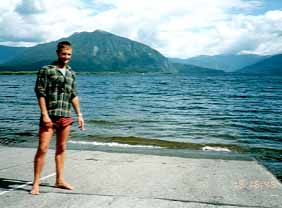

釣行日誌 ＮＺ編 「5000マイルを越えて」
湖畔にて
1997/01/15(WED)-2
ビッグリバーの大橋を渡ってモアナの町に入り、坂を下るとブルナー湖が眼前に広がった。来たときは曇りがちの天気で良く見えなかったが、今日は良く晴れており、バカンス日和である。デビッドが時間つぶしに湖畔まで行ってくれた。車を止め、写真を撮る。岸辺では子供たちが水泳を楽しんでいた。

車を吊橋の所まで回すと、デビッドが、これがアウトフローリバーの流れ出しだと言って教えてくれた。たぶん、今日か明日には、この川のどこかを攻めることになるのだ。
イマニミテイロ。
ロッジに戻ると、ビルと松延さん夫妻もたった今戻ってきたところらしかった。今日の釣果を聞くと二人で５尾釣り上げたとのこと。もはや落胆のしようもない。こちらは３日間でゼロ！なんともはや、である。
釣り具を片づけて、お茶を飲む。部屋に戻ってベッドに横になるが、疲労しきっているにもかかわらず眠れそうにない。デビッドが庭でキャンプ道具を干しているので手伝うことにする。
テントはニュージーランド製の「Fairly Down」の物ばかりで、たいへん良い品質とのこと。また、シュラフは「Everest」のダウン90％、フェザー10％の高級品である。ビルの話では、最上級から２番めのクラスのシュラフだそうだ。外国製のためサイズが大きく、人形型シュラフにもかかわらず私の体なら中で楽に寝返りが打てるのである。このシュラフのおかげでキャンプの二泊はまことに心地よく過ごすことが出来た。
この「Everest」ブランドは、ニュージーランドの５ドル札にもその肖像がのっている有名なヒラリー卿が創立したということである。
ブルナー湖を見おろすロッジの庭に３張りのテントと、５つのシュラフを干し、ベランダでしばしデビッドと語り合う。彼は地理学が趣味であり、冬の間はその関係の書物をたくさん読むそうである。ニュージーランドも火山があり、地震もたびたびあるそうである。ニュージーランド中央のアルプスは大規模な地殻プレートの衝突でできたのだとか、このへんの平野ははるか昔の氷河のすべった痕だとかの話をしてくれた。
また、彼は年に１・２回は単独登山をしており、ロッジから見えるアレキサンダー山（ Mt Alexander 標高1958ｍ ）にも７年前に１週間かけて登ったとのこと。ロッジのすぐ目の前にはマオリ語で「出会いの丘」と呼ばれる小高い山がそびえている。
車のスピードメータのことを訊ねると、ああ、あれは夏の暑いときにジョイントのゴムが溶けてしまって狂ったままなんだと笑って答えた。
この３日間の苦しい釣行を経て、デビッドには深い親近感を覚えるようになっていた。いつか、彼が日本に来ることがあったら、日本の山や川を案内してあげたいと思う。しかし、山はともかく、川となると....。自信を持って案内できる川はどこにあるのか？その時に。
釣行日誌ＮＺ編 目次へ
サイトマップ
ホームへ
お問い合わせ